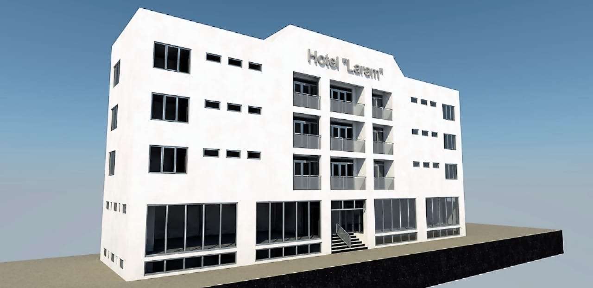
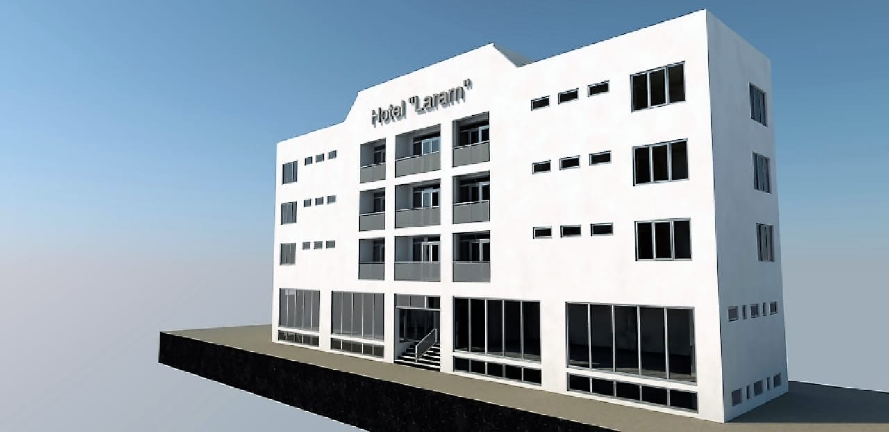
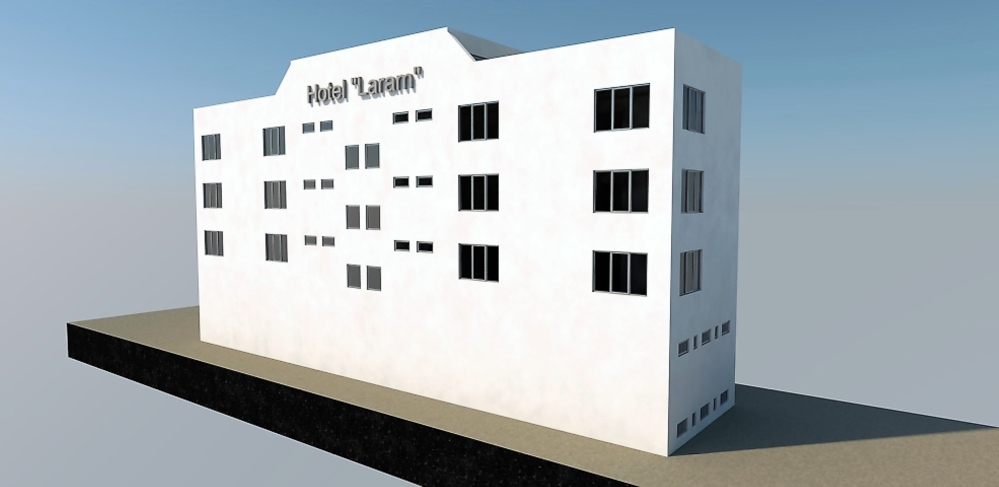
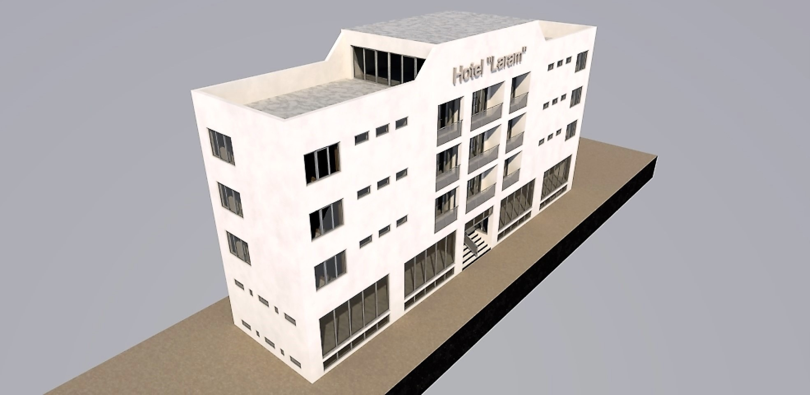
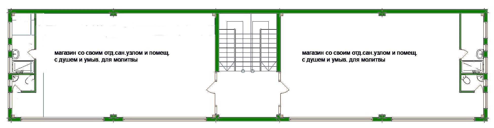
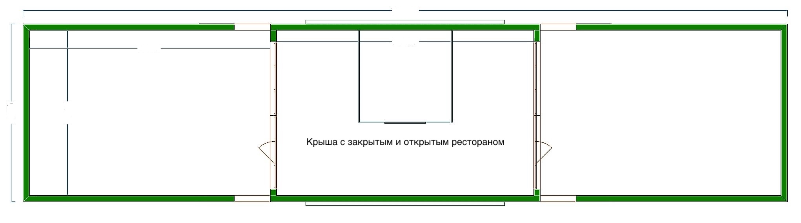
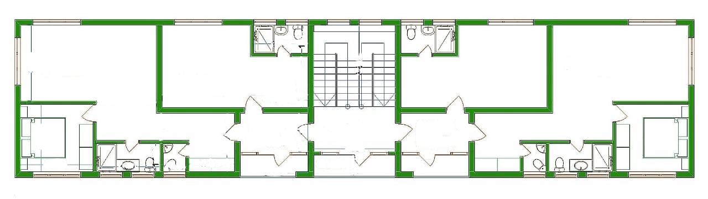
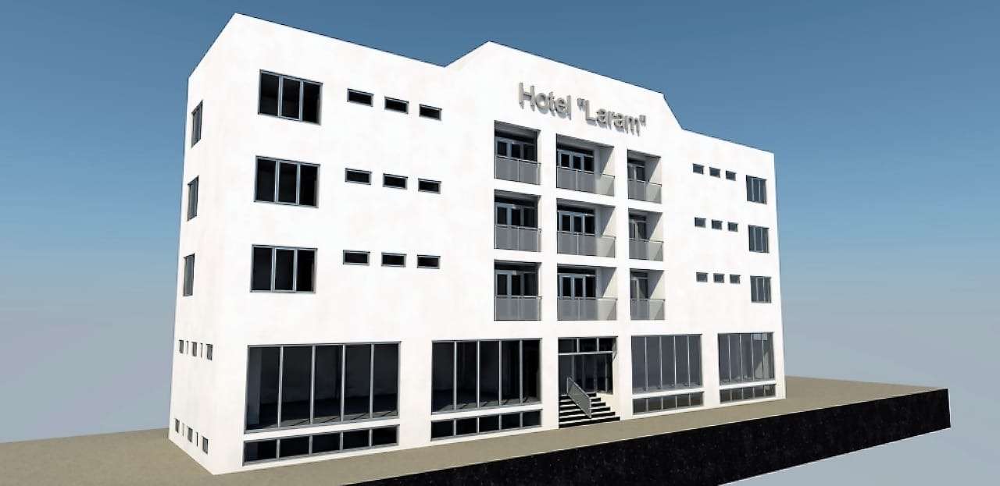
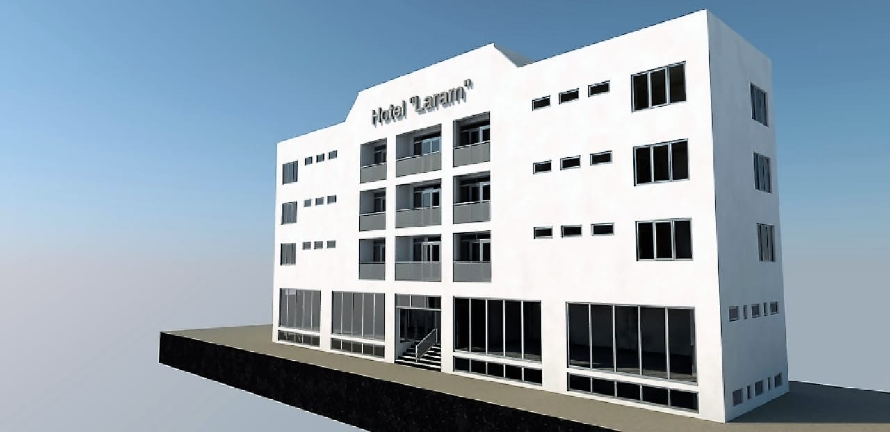
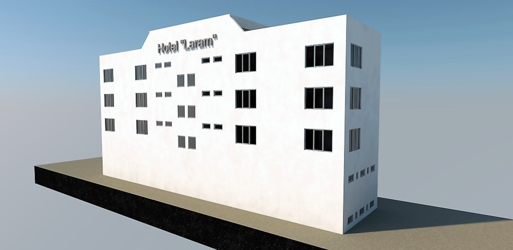
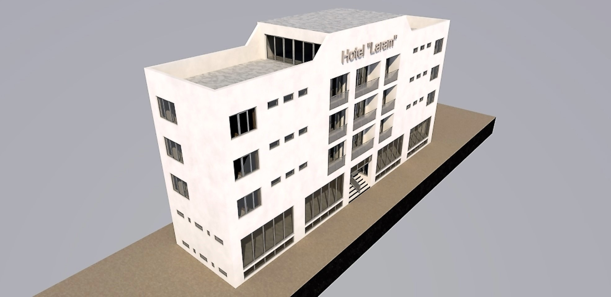
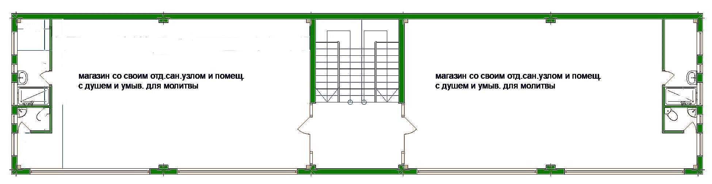
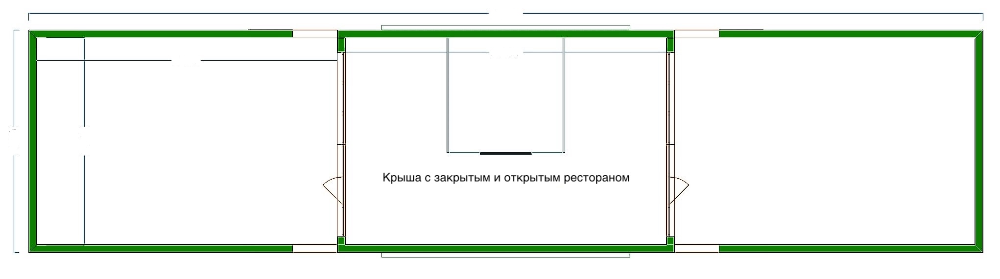
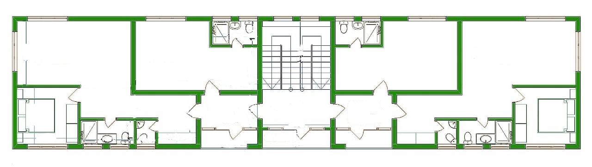
Современный апарт-отель «Laram» с торговой галереей и панорамным рестораном на крыше
Проект представляет собой современное четырехэтажное здание многоцелевого назначения. Лаконичный белый фасад с ритмичным рядом балконов и большими витринными окнами первого этажа придает зданию стильный и деловой вид. Комплекс спроектирован как готовый бизнес-объект, объединяющий торговые площади, комфортабельное жилье и зону отдыха.
Коммерческий уровень (Цокольный/Первый этаж): Нижний уровень отведен под коммерцию и ритейл. Пространство разделено на два больших торговых зала (магазина), каждый из которых имеет независимый вход.
- Уникальная особенность: В каждом торговом блоке спроектирован не только стандартный санузел, но и специальное помещение с душевой и умывальником, оборудованное для совершения молитвы/омовения, что является важным преимуществом для посетителей и персонала.
- Панорамное остекление витрин обеспечивает отличную видимость и естественное освещение торговых залов.
Жилые этажи (Гостиничный фонд): Типовой этаж комплекса предлагает продуманный микс апартаментов разного формата, что позволяет охватить широкую аудиторию гостей:
- Квартиры-студии: В центре этажа расположены уютные студии для соло-путешественников или пар.
- Двухкомнатные номера: По краям здания размещены просторные апартаменты с гостиной, спальней, большой прихожей и двумя санузлами.
- Балконы: Из общих холлов есть выходы на балконы, а фасад здания украшен индивидуальными балконами для номеров.
Зона отдыха (Эксплуатируемая кровля): Венчающая часть здания — это пространство для досуга и гастрономии. На крыше спроектирован ресторан, который делится на две зоны:
1. Закрытый зал для комфортного отдыха в любую погоду.
2. Открытая терраса, где гости могут наслаждаться видами и свежим воздухом.
Преимущества комплекса:
- Многофункциональность: «Город в здании» — магазины, жилье и ресторан в одном месте.
- Удобство: Наличие лифта и широких лестничных маршей.
- Внимание к деталям: Предусмотрены специализированные комнаты для молитв в общественной зоне.